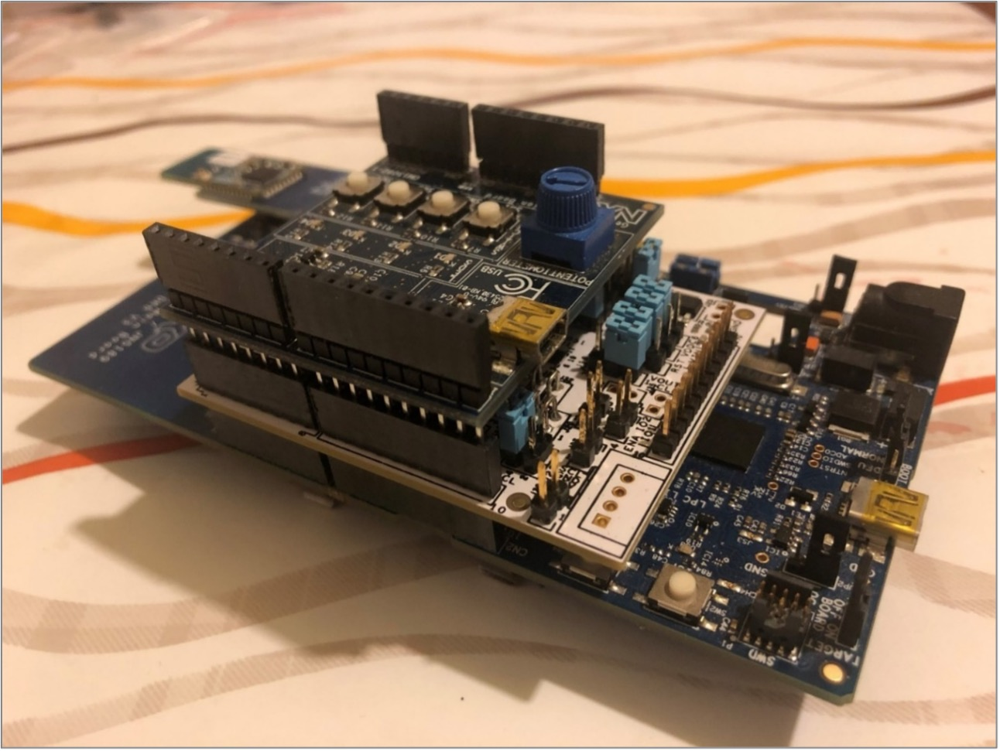
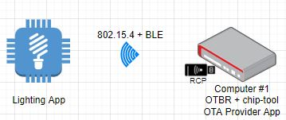

CHIP K32W061 Lighting Example Application#
The Project CHIP K32W061 Lighting Example demonstrates how to remotely control a light bulb. The light bulb is simulated using one of the LEDs from the expansion board. It uses buttons to test turn on/turn off of the light bulb. You can use this example as a reference for creating your own application.
The example is based on Project CHIP and the NXP K32W SDK, and supports remote access and control of a light bulb over a low-power, 802.15.4 Thread network.
The example behaves as a Project CHIP accessory, that is a device that can be paired into an existing Project CHIP network and can be controlled by this network.
Introduction#

The K32W061 lighting example application provides a working demonstration of a light bulb device, built using the Project CHIP codebase and the NXP K32W061 SDK. The example supports remote access (e.g.: using CHIP Tool from a mobile phone) and control of a light bulb over a low-power, 802.15.4 Thread network. It is capable of being paired into an existing Project CHIP network along with other Project CHIP-enabled devices.
The example targets the NXP K32W061 DK6 development kit, but is readily adaptable to other K32W-based hardware.
The CHIP device that runs the lighting application is controlled by the CHIP controller device over the Thread protocol. By default, the CHIP device has Thread disabled, and it should be paired over Bluetooth LE with the CHIP controller and obtain configuration from it. The actions required before establishing full communication are described below.
The example also comes with a test mode, which allows to start Thread with the default settings by pressing a button. However, this mode does not guarantee that the device will be able to communicate with the CHIP controller and other devices.
SE051H Secure Element#
Deployment of this firmware configuration requires the K32W061 board setups using the K32W061 module board, SE051 Expansion board and Generic Expansion board as shown below:

The SE051H Secure Element extension may be used for best in class security and offloading some of the Project CHIP cryptographic operations. Depending on your hardware configuration, choose one of the options below (building with or without Secure Element). NOTE: the SE051H is a derivative of the SE051 product family (see http://www.nxp.com/SE051) including dedicated CHIP support in addition to the SE051 feature set. See the material provided separately by NXP for more details on SE051H.
Bluetooth LE Advertising#
In this example, to commission the device onto a Project CHIP network, it must be discoverable over Bluetooth LE. For security reasons, you must start Bluetooth LE advertising manually after powering up the device by pressing Button USERINTERFACE.
Bluetooth LE Rendezvous#
In this example, the commissioning procedure (called rendezvous) is done over Bluetooth LE between a CHIP device and the CHIP controller, where the controller has the commissioner role.
To start the rendezvous, the controller must get the commissioning information from the CHIP device. The data payload is encoded within a QR code, printed to the UART console and shared using an NFC tag. For security reasons, you must start NFC tag emulation manually after powering up the device by pressing Button 4.
Thread Provisioning#
Last part of the rendezvous procedure, the provisioning operation involves sending the Thread network credentials from the CHIP controller to the CHIP device. As a result, device is able to join the Thread network and communicate with other Thread devices in the network.
Device UI#
The example application provides a simple UI that depicts the state of the device and offers basic user control. This UI is implemented via the general-purpose LEDs and buttons built in to the OM15082 Expansion board attached to the DK6 board.
LED D2 shows the overall state of the device and its connectivity. Four states are depicted:
Short Flash On (50ms on/950ms off) — The device is in an unprovisioned (unpaired) state and is waiting for a commissioning application to connect.
Rapid Even Flashing (100ms on/100ms off) — The device is in an unprovisioned state and a commissioning application is connected via BLE.
Short Flash Off (950ms on/50ms off) — The device is full provisioned, but does not yet have full network (Thread) or service connectivity.
Solid On — The device is fully provisioned and has full network and service connectivity.
LED D3 shows the state of the simulated light bulb. When the LED is lit the light bulb is on; when not lit, the light bulb is off.
Button SW2 can be used to reset the device to a default state. A short Press Button SW2 initiates a factory reset. After an initial period of 3 seconds, LED2 D2 and D3 will flash in unison to signal the pending reset. After 6 seconds will cause the device to reset its persistent configuration and initiate a reboot. The reset action can be cancelled by press SW2 button at any point before the 6 second limit.
Button SW3 can be used to change the state of the simulated light bulb. This can be used to mimic a user manually operating a switch. The button behaves as a toggle, swapping the state every time it is pressed.
Button SW4 can be used for joining a predefined Thread network advertised by a Border Router. Default parameters for a Thread network are hard-coded and are being used if this button is pressed.
The remaining two LEDs (D1/D4) and button (SW1) are unused.
Directly on the development board, Button USERINTERFACE can be used for enabling Bluetooth LE advertising for a predefined period of time. Also, pushing this button starts the NFC emulation by writing the onboarding information in the NTAG.
No expansion board#
In case the OM15082 Expansion board is not attached to the DK6 board, the functionality of LED D2 and LED D3 is taken over by LED DS2, respectively LED DS3, which can be found on the DK6 board.
Also, by long pressing the USERINTERFACE button, the factory reset action will be initiated.
Identify cluster LED state#
The Identify cluster server supports two identification commands: Identify and TriggerEffect. These commands allow a user to identify a particular device. For these commands, the LED D3 is used.
The Identify command will use the LED D3 to flash with a period of 0.5 seconds.
The TriggerEffect command will use the LED D3 with the following effects:
Blink — flash with a 1 second period for 2 seconds
Breathe — flash with a 1 second period for 15 seconds
Okay — flash with a 1 second period for 4 seconds
Channel change — same as Blink
Finish effect — complete current effect sequence and terminate
Stop effect — terminate as soon as possible
Building#
In order to build the Project CHIP example, we recommend using a Linux distribution (supported Operating Systems are listed in BUILDING.md).
Make sure that below prerequisites are correctly installed (as described in BUILDING.md)
sudo apt-get install git gcc g++ pkg-config libssl-dev libdbus-1-dev \
libglib2.0-dev libavahi-client-dev ninja-build python3-venv python3-dev \
python3-pip unzip libgirepository1.0-dev libcairo2-dev libreadline-dev
Step 1: checkout NXP specific submodules only
user@ubuntu:~/Desktop/git/connectedhomeip$ scripts/checkout_submodules.py --shallow --platform nxp --recursive
Step 2: activate local environment
user@ubuntu:~/Desktop/git/connectedhomeip$ source scripts/activate.sh
If the script says the environment is out of date, you can update it by running the following command:
user@ubuntu:~/Desktop/git/connectedhomeip$ source scripts/bootstrap.sh
Step 3: Init NXP SDK(s)
user@ubuntu:~/Desktop/git/connectedhomeip$ third_party/nxp/nxp_matter_support/scripts/update_nxp_sdk.py --platform k32w0
Note: By default update_nxp_sdk.py will try to initialize all NXP SDKs. Arg “– help” could be used to view all available options.
Start building the application:
user@ubuntu:~/Desktop/git/connectedhomeip$ cd examples/lighting-app/nxp/k32w0
user@ubuntu:~/Desktop/git/connectedhomeip/examples/lighting-app/nxp/k32w0$ gn gen out/debug
user@ubuntu:~/Desktop/git/connectedhomeip/examples/lighting-app/nxp/k32w0$ ninja -C out/debug
To build with Secure Element, follow the same steps as above but set
chip_with_se05x=1 chip_enable_ota_requestor=false in the gn gen command.
Note that option chip_enable_ota_requestor=false is required for building with
Secure Element due to flash constraints.
K32W041AM flavor
Exactly the same steps as above but set argument
build_for_k32w041am=1in the gn command.
Also, in case the OM15082 Expansion Board is not attached to the DK6 board, the build argument (chip_with_OM15082) inside the gn build instruction should be set to zero. The argument chip_with_OM15082 is set to zero by default.
In case that Openthread CLI is needed, chip_with_ot_cli build argument must be set to 1.
In case the board doesn’t have 32KHz crystal fitted, one can use the 32KHz free running oscillator as a clock source. In this case one must set the use_fro_32k argument to 1.
K32W0x1 supports antenna diversity feature, which is a technique that maximizes
the performance of an antenna system, allowing the radio signal to be switched
between two antennas that have very low correlation between their received
signals. Typically, this is achieved by spacing two antennas around 0.25
wavelengths apart or by using 2 orthogonal types of polarization. This is
controlled by software. K32W0x1 provides an output (ADO) on one of DIO7,
DIO9 or DIO19 and optionally its complement (ADE) on DIO6 that can be
used to control an antenna switch. In order to use this feature, user must set
use_antenna_diversity to 1.
In case signing errors are encountered when running the “sign_images.sh” script (run automatically) install the recommanded packages (python version > 3, pip3, pycryptodome):
user@ubuntu:~$ python3 --version
Python 3.8.2
user@ubuntu:~$ pip3 --version
pip 20.0.2 from /usr/lib/python3/dist-packages/pip (python 3.8)
user@ubuntu:~$ pip3 list | grep -i pycrypto
pycryptodome 3.9.8
The resulting output file can be found in out/debug/chip-k32w0x-light-example.
Overwrite board config files#
The example uses template/reference board configuration files.
To overwrite the board configuration files, set override_is_DK6=false in the
k32w0_sdk target from the app BUILD.gn:
k32w0_sdk("sdk") {
override_is_DK6 = false
...
}
This variable will be used by k32w0_sdk.gni to overwrite chip_with_DK6
option, thus the reference board configuration files will no longer be used.
Known issues building#
When using Secure element and cross-compiling on Linux, log messages from the Plug&Trust middleware stack may not echo to the console.
Rotating device id#
This is an optional feature and can be used in multiple ways (please see section 5.4.2.4.5 from Matter specification). One use case is Amazon Frustration Free Setup, which leverages the C3 Characteristic (Additional commissioning-related data) to offer an easier way to set up the device. The rotating device id will be encoded in this additional data and is programmed to rotate at pre-defined moments. The algorithm uses a unique per-device identifier that must be programmed during factory provisioning.
Please use the following build args:
chip_enable_rotating_device_id=1- to enable rotating device id.chip_enable_additional_data_advertising=1- to enable C3 characteristic.
Manufacturing data#
See Guide for writing manufacturing data on NXP devices.
There are factory data generated binaries available in
third_party/nxp/nxp_matter_support/examples/platform/k32w0/scripts/demo_generated_factory_data
folder. These are based on the DAC, PAI and PAA certificates found in
scripts/tools/nxp/demo_generated_certs folder. The demo_factory_data_dut1.bin
uses the DAC certificate and private key found in
third_party/nxp/nxp_matter_support/examples/platform/k32w0/scripts/demo_generated_factory_data/dac/dut1
folder. The demo_factory_data_dut2.bin uses the DAC certificate and private key
found in
third_party/nxp/nxp_matter_support/examples/platform/k32w0/scripts/demo_generated_factory_data/dac/dut2
folder. These two factory data binaries can be used for testing topologies with
2 DUTS. They contain the corresponding DACs/PAIs generated using
generate_nxp_chip_factory_bin.py script. The discriminator is 14014 and the
passcode is 1000. These demo certificates are working with the CDs installed in
CHIPProjectConfig.h.
Regarding factory data provider, there are two options:
use the default factory data provider:
FactoryDataProviderImplby settingchip_with_factory_data=1in the gn build command.use a custom factory data provider: please see Guide for implementing a custom factory data provider. This can be enabled when
chip_with_factory_data=1by settinguse_custom_factory_provider=1in the gn build command.
Flashing and debugging#
Instructions to program the firmware can be found also at OpenThread Flash Instructions.
Using DK6programmer#
The application binary’s path is out/debug/chip-k32w0x-light-example.bin.
DK6Programmer can be used for flashing the application. There are two available versions of the DK6Programmer tool.
The legacy version consists of a Windows executable found inside the
SDK at path
tools/JN-SW-4407-DK6-Flash-Programmer. This is a Windows application that can
be installed using the .exe file. Once the application is installed, the COM
port for K32W061 must be identified:
C:\nxp\DK6ProductionFlashProgrammer>DK6Programmer.exe --list
Available connections:
<COM_PORT>
Once the COM port is identified, the required binary can be flashed:
DK6Programmer.exe -V2 -s <COM_PORT> -P 1000000 -Y -p FLASH@0x4000="chip-k32w0x-light-example.bin"
Note: The above example takes into account that the binary uses the
chip_enable_ota_requestor=trueoption. The address offset corresponds to the space left for the SSBL binary and the OTA space for the SSBL. Ifchip_enable_ota_requestoris set tofalse, then0x4000needs to be replaced with0x0.
DK6 Flash Programmer tool has also been integrated part of NXP Secure Provisioning SDK (SPSDK). This tool is supported by environments like Windows, Linux or Mac.
SPSDK can be installed and run from a Python environment using
these instructions.
This enables the user to have transparent access to the dk6 programming tool
through SPSDK.
# after specific environment installation steps
$ spsdk --help
...
+-- dk6prog Tool for reading and programming flash memory of DK6 target devices.
� +-- erase Erase the memory.
� +-- info Prints the information about the connected device.
� +-- isp Issues ISP sequence as defined in Driver interface.
� +-- listdev Prints the information about the connected devices.
� +-- read Reads the memory and writes it to the file or stdout.
� +-- write Write the memory.
...
Dependencies for the dk6prog module can be installed using the following
command, more details
here:
$ pip install spsdk[dk6]
The SPSDK installation adds dk6prog as executable to system path, so user
can use directly dk6prog from terminal. The following commands are to be used
to write the chip-k32w0x-light-example binary to the board.
$ dk6prog listdev
This is an experimental utility. Use with caution!
List of available devices:
DEVICE ID: DN038ZH3, VID: 0x403, PID: 0x6015, Serial number: DN038ZH3, Description: DK6 Carrier Board, Address: 9, Backend: Backend.PYFTDI
$ dk6prog -d DN038ZH3 write 0x4000 ~/path/to/bin/chip-k32w0x-light-example.bin
This is an experimental utility. Use with caution!
Writing memory [####################################] 100%
Written 596450 bytes to memory ID 0 at address 0x4000
Note: Running
dk6progfrom Windows OS command line requires an integer value for DEVICE ID.
C:\nxp\spsdk>dk6prog listdev
This is an experimental utility. Use with caution!
List of available devices:
DEVICE ID: 0, VID: 0x0, PID: 0x0, Serial number: b'DN038ZH3', Description: b'DK6 Carrier Board', Address: 67330069, Backend: Backend.FTD2xx
C:\nxp\spsdk>dk6prog -d 0 info
This is an experimental utility. Use with caution!
Chip ID: 0x88888888
ROM Version: 0x140000cc
MAC Address: A8:2B:1F:03:00:8D:15:00
Detected DEVICE: UNKNOWN
Memory Memory ID Base Address Length Sector Size Memory Type Access
----------------------------------------------------------------------------------------------
FLASH 0 0x0 0x9de00 0x200 FLASH All is available
PSECT 1 0x0 0x1e0 0x10 FLASH All is available
pFLASH 2 0x0 0x1e0 0x10 FLASH All is available
Config 3 0x9fc00 0x200 0x200 FLASH All is available
EFUSE 4 0x0 0x80 0x2 EFUSE (OTP) Write Enabled
ROM 5 0x3000000 0x20000 0x1 ROM Write Enabled
RAM0 6 0x4000000 0x16000 0x1 RAM Write Enabled
RAM1 7 0x4020000 0x10000 0x1 RAM Write Enabled
Note: The above example takes into account that the binary uses the
chip_enable_ota_requestor=trueoption. The address offset corresponds to the space left for the SSBL binary and the OTA space for the SSBL. Ifchip_enable_ota_requestoris set tofalse, then0x4000needs to be replaced with0x0.
Using MCUXpresso#
If flashing and debugging is required, MCUXpresso can be used as instructed in MCUXpresso flashing and debugging instructions. The file needed to be used in MCUXpresso is out/debug/chip-k32w0x-light-example.
Pigweed tokenizer#
The tokenizer is a pigweed module that allows hashing the strings. This greatly reduces the flash needed for logs. The module can be enabled by building with the gn argument chip_pw_tokenizer_logging=true. The detokenizer script is needed for parsing the hashed scripts.
Detokenizer script#
The python3 script detokenizer.py is a script that decodes the tokenized logs
either from a file or from a serial port. It is located in the following path
third_party/nxp/nxp_matter_support/examples/platform/k32w0/scripts/detokenizer.py.
The script can be used in the following ways:
usage: detokenizer.py serial [-h] -i INPUT -d DATABASE [-o OUTPUT]
usage: detokenizer.py file [-h] -i INPUT -d DATABASE -o OUTPUT
The first parameter is either serial or file and it selects between decoding from a file or from a serial port.
The second parameter is -i INPUT and it must se set to the path of the file or the serial to decode from.
The third parameter is -d DATABASE and represents the path to the token database to be used for decoding. The default path is out/debug/chip-k32w0x-light-example-database.bin after a successful build.
The forth parameter is -o OUTPUT and it represents the path to the output file where the decoded logs will be stored. This parameter is required for file usage and optional for serial usage. If not provided when used with serial port, it will show the decoded log only at the stdout and not save it to file.
Notes#
The token database is created automatically after building the binary if the argument chip_pw_tokenizer_logging=true was used.
The detokenizer script must be run inside the example’s folder after a successful run of the scripts/activate.sh script. The pw_tokenizer module used by the script is loaded by the environment. An example of running the detokenizer script to see logs of a lighting app:
python3 ../../../../third_party/nxp/nxp_matter_support/examples/platform/k32w0/scripts/detokenizer.py serial -i /dev/ttyACM0 -d out/debug/chip-k32w0x-light-example-database.bin -o device.txt
Known issues tokenizer#
The building process will not update the token database if it already exists. In case that new strings are added and the database already exists in the output folder, it must be deleted so that it will be recreated at the next build.
Not all tokens will be decoded. This is due to a gcc/pw_tokenizer issue. The pw_tokenizer creates special elf sections using attributes where the tokens and strings will be stored. This sections will be used by the database creation script. For template C++ functions, gcc ignores these attributes and places all the strings by default in the .rodata section. As a result the database creation script won’t find them in the special-created sections.
If run, closed and rerun with the serial option on the same serial port, the detokenization script will get stuck and not show any logs. The solution is to unplug and plug the board and then rerun the script.
NXP Ultrafast P256 ECC Library#
Building steps#
By default, the application builds with NXP Ultrafast P256 ECC Library. To build with this library, use the following arguments:
Build without Secure element (chip_with_se05x=0) and with crypto platform (chip_crypto=”platform”).
To stop using Ultrafast P256 ECC Library, simply build with chip_crypto=”mbedtls” or with Tinycrypt.
Tinycrypt ECC library#
Building steps#
In order to use the Tinycrypt ECC library, use the following build arguments:
Build without Secure element (chip_with_se05x=0), with crypto platform (chip_crypto=”platform”) and with tinycrypt selected (chip_crypto_flavor=”tinycrypt”).
OTA#
Over the air updates (OTA) require several software components running on the K32W0x1. Firstly, a Secondary Stage Bootloader (SSBL) is required written in the first part of the internal flash memory, usually starting at address 0x0. This enables the board to boot and check if a new OTA binary has been received. If this is true, the bootloader writes the OTA binary to the appropriate storage, internal and/or external flash, after which it reboots the board. If no new OTA binaries have been found, then the bootloader gives execution control to the application.
The internal flash needs to be prepared for the OTA process. First 16K of the internal flash needs to be populated with SSBL related data while the last 8.5K of flash space is holding flash configuration related data. The space between these two zones will be filled by the application. More details regarding the internal flash space can be found in the linker file.
The steps for building the SSBL binary with appropriate configuration and writing to the board the binary and other OTA related configurations are described in the K32W0x1 OTA guide.
Note that the application needs to be built using the
chip_enable_ota_requestor=true option. This is enabled in the configuration by
default if no chip_enable_ota_requestor explicit setting is done.
OTA Testing#
The OTA topology used for OTA testing is illustrated in the figure below. Topology is similar with the one used for Matter Test Events.

The concept for OTA is the next one:
there is an OTA Provider Application that holds the OTA image. In our case, this is a Linux application running on an Ubuntu based-system;
the OTA Requestor functionality is embedded inside the Lighting Application. It will be used for requesting OTA blocks from the OTA Provider;
the controller (a linux application called chip-tool) will be used for commissioning both the device and the OTA Provider App. The device will be commissioned using the standard Matter flow (BLE + IEEE 802.15.4) while the OTA Provider Application will be commissioned using the onnetwork option of chip-tool;
during commissioning, each device is assigned a node id by the chip-tool (can be specified manually by the user). Using the node id of the device and of the lighting application, chip-tool triggers the OTA transfer by invoking the announce-ota-provider command - basically, the OTA Requestor is informed of the node id of the OTA Provider Application.
Computer #1 can be any system running an Ubuntu distribution. We recommand using CSA official instructions from here, where RPi 4 are proposed. Also, CSA official instructions document point to the OS/Docker images that should be used on the RPis. For compatibility reasons, we recommand compiling chip-tool and OTA Provider applications with the same commit id that was used for compiling the Lighting Application. Also, please note that there is a single controller (chip-tool) running on Computer #1 which is used for commissioning both the device and the OTA Provider Application. If needed, these instructions could be used for connecting the RPis to WiFi.
Build the Linux OTA provider application:
user@computer1:~/connectedhomeip$ : ./scripts/examples/gn_build_example.sh examples/ota-provider-app/linux out/ota-provider-app chip_config_network_layer_ble=false
Build Linux chip-tool:
user@computer1:~/connectedhomeip$ : ./scripts/examples/gn_build_example.sh examples/chip-tool out/chip-tool-app
Build OTA image:
In order to build an OTA image, use NXP wrapper over the standard tool
src/app/ota_image_tool.py:
scripts/tools/nxp/ota/ota_image_tool.py
The tool can be used to generate an OTA image with the following format:
| OTA image header | TLV1 | TLV2 | ... | TLVn |
where each TLV is in the form |tag|length|value|.
Note that “standard” TLV format is used. Matter TLV format is only used for factory data TLV value.
A user can select which default processors to enable:
chip_enable_ota_firmware_processor=1to enable default firmware (app/SSBL) update processor (enabled by default).chip_enable_ota_factory_data_processor=1to enable default factory data update processor (disabled by default).
The address for storing the custom OTA entry can also be specified:
ota_custom_entry_address="0x000C1000"is the default value, where0x000C1000is the end address of the PDM area. PDM area ends at0x00100000(top of external flash) and has a size of63 * 4096bytes. The user should be aware of the external flash configuration and use an address that does not overlap with anything else.
Please see more in the OTA image tool guide.
Here is an example that generates an OTA image with application update TLV:
./scripts/tools/nxp/ota/ota_image_tool.py create -v 0xDEAD -p 0xBEEF -vn 2 -vs "2.0" -da sha256 --app-input-file chip-k32w0x-light-example.bin chip-k32w0x-light-example.ota
A note regarding OTA image header version (-vn option). An application binary
has its own software version, given by
CHIP_DEVICE_CONFIG_DEVICE_SOFTWARE_VERSION (1 by default), which can be
overwritten. For having a correct OTA process, the OTA header version should be
the same as the binary embedded software version. When building the update
image, the build arguments nxp_software_version=2 and
nxp_sofware_version_string=\"2.0\" can be added to the gn gen command in order
to specify the upgraded version.
Start the OTA Provider Application:
user@computer1:~/connectedhomeip$ : rm -rf /tmp/chip_*
user@computer1:~/connectedhomeip$ : ./out/ota-provider-app/chip-ota-provider-app -f chip-k32w0x-light-example.ota
Provision the OTA provider application and assign node id 1. Also, grant ACL entries to allow OTA requestors:
user@computer1:~/connectedhomeip$ : rm -rf /tmp/chip_*
user@computer1:~/connectedhomeip$ : ./out/chip-tool-app/chip-tool pairing onnetwork 1 20202021
user@computer1:~/connectedhomeip$ : ./out/chip-tool-app/chip-tool accesscontrol write acl '[{"fabricIndex": 1, "privilege": 5, "authMode": 2, "subjects": [112233], "targets": null}, {"fabricIndex": 1, "privilege": 3, "authMode": 2, "subjects": null, "targets": null}]' 1 0
Provision the device and assign node id 2:
user@computer1:~/connectedhomeip$ : ./out/chip-tool-app/chip-tool pairing ble-thread 2 hex:<operationalDataset> 20202021 3840
Start the OTA process:
user@computer1:~/connectedhomeip$ : ./out/chip-tool-app/chip-tool otasoftwareupdaterequestor announce-otaprovider 1 0 0 0 2 0
Known issues OTA#
SRP cache on the openthread border router needs to flushed each time a new commissioning process is attempted. For this, factory reset the device, then execute ot-ctl server disable followed by ot-ctl server enable. After this step, the commissioning process of the device can start;
Due to some MDNS issues, the commissioning of the OTA Provider Application may fail. Please make sure that the SRP cache is disabled (ot-ctl srp server disable) on the openthread border router while commissioning the OTA Provider Application;
No other Docker image should be running (e.g.: Docker image needed by Test Harness) except the OTBR one. A docker image can be killed using the command:
user@computer1:~/connectedhomeip$ : sudo docker kill $container_id
In order to avoid MDNS issues, only one interface should be active at one time. E.g.: if WiFi is used then disable the Ethernet interface and also disable multicast on that interface:
user@computer1:~/connectedhomeip$ sudo ip link set dev eth0 down
user@computer1:~/connectedhomeip$ sudo ifconfig eth0 -multicast
If OTBR Docker image is used, then the “-B” parameter should point to the interface used for the backbone.
If Wi-Fi is used on a RPI4, then a 5Ghz network should be selected. Otherwise, issues related to BLE-WiFi combo may appear.